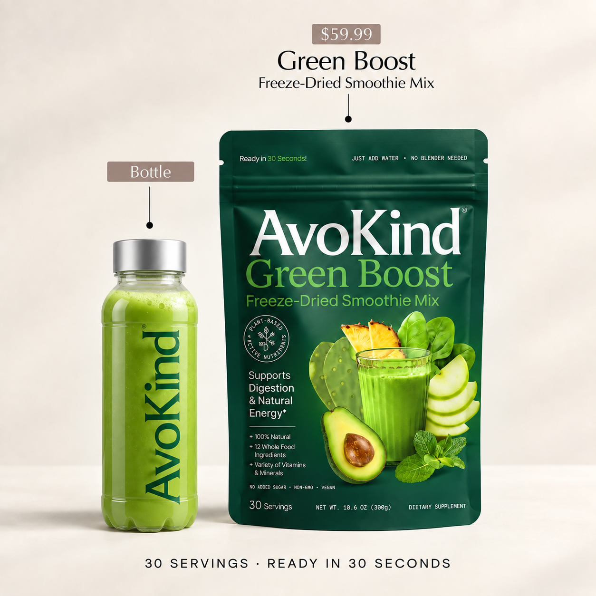
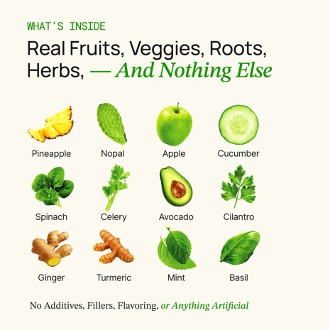
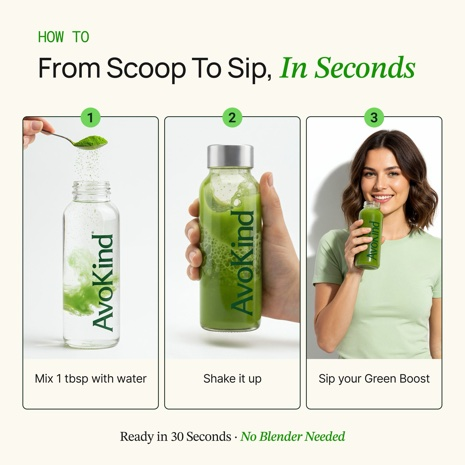
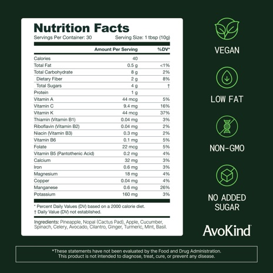

Freeze-dried, not heat-dried.
Green Boost uses freeze-drying: water is removed at low temperature under reduced pressure. Precise nutrient retention varies by ingredient and process, so the prototype avoids a universal percentage claim.
Natural Ingredients
12 fruits, vegetables, herbs and roots. Tap an ingredient to see what it brings to Green Boost and the studies behind it.

Pineapple

Nopal

Green Apple

Cucumber

Spinach

Celery

Avocado

Cilantro

Ginger

Turmeric

Mint

Basil
Per 10g serving
Nutrition
Simple numbers, easy to find.
40Calories
2gFiber
0Caffeine
0gAdded sugar
| Nutrient | Per serving |
|---|---|
| Serving size | 10g |
| Calories | 40 |
| Total fat | 0.5g |
| Dietary fiber | 2g |
| Total sugars | 4g |
| Added sugars | 0g |
| Caffeine | 0mg |
Nutrition highlights shown for the current 10g serving used in this prototype.
From scoop to sip, in seconds.
Add liquid, shake or stir, and drink. No blender, freezer or chopping required.
12 whole foods
Fruits, vegetables, herbs and roots you can recognize.
Ready in 30 seconds
Add liquid, shake or stir. No blender required.
Shelf-stable
Keep the pouch in the pantry or take it with you. No freezer required.
Customer reviews
FAQ
What is Green Boost?
A freeze-dried smoothie mix made from 12 fruits, vegetables, roots and herbs.
How do I prepare it?
Mix one serving with cold water, milk or a plant-based drink and shake or stir until smooth.
What does it taste like?
Pineapple and green apple come through first, followed by fresh greens, creamy avocado, herbs, ginger and turmeric.
Does it contain caffeine?
No. Green Boost is naturally caffeine-free.
How many servings are available?
Green Boost is available in 15-serving and 30-serving sizes.